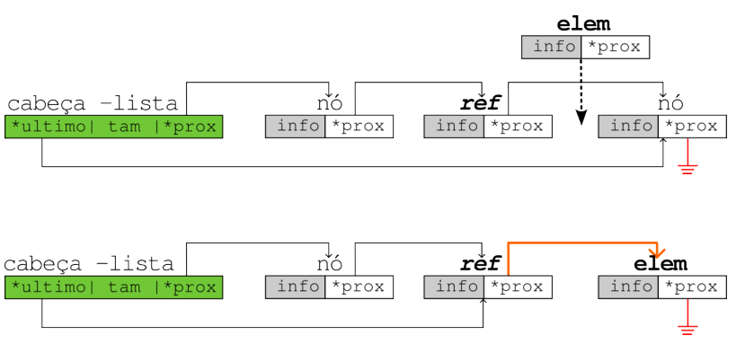
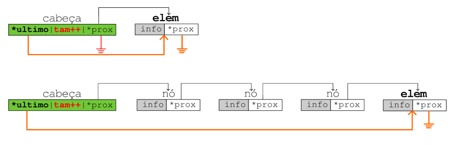
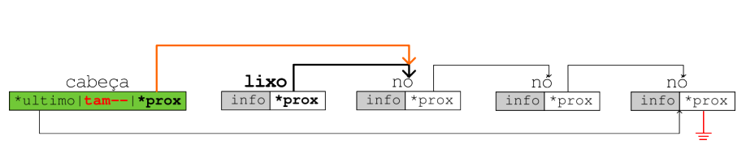

Listas Simplesmente Encadeadas
1. Conceitos Gerais
1.1 Listas Estáticas (Arrays)
- Espaço consecutivo na memória RAM;
- Acesso fácil através de índices;
- Nome corresponde ao endereço de memória do primeiro elemento;
- Vantagem: Fácil acesso (O(1) para acesso por índice);
- Desvantagem: Difícil manipulação (inserção/remoção requer deslocamento de elementos - O(n));
1.2 Listas Simplesmente Encadeadas
É uma sequência de células onde cada célula contém:
- O conteúdo armazenado
- O endereço da célula seguinte
A sequência termina quando uma célula aponta para NULL. O endereço de uma lista encadeada é o endereço de sua primeira célula.
2. Estrutura de Dados
2.1 Definição do Nó
Implementação:
// Opção 1: Struct básica
struct node {
int conteudo; // conteúdo dessa célula
struct node *proximo; // endereço da próxima célula
};
// Opção 2: Com typedef
typedef struct node no;
struct node {
int conteudo;
no *proximo;
};
// Opção 3: Mais comum
typedef struct node {
int conteudo;
struct node *proximo;
} no;
2.2 Cabeça da Lista
Estrutura que armazena metadados sobre a lista para melhor gerenciamento:
Implementação:
typedef struct head {
int num_itens; // número de elementos na lista
no *primeiro; // ponteiro para o primeiro nó
no *ultimo; // ponteiro para o último nó
} cabeca;
3. Operações Básicas
3.1 Inserir no Início

Implementação:
void inserir_inicio(cabeca *lista, no *novo_no) {
novo_no->proximo = lista->primeiro;
lista->primeiro = novo_no;
lista->num_itens++;
if (novo_no->proximo == NULL) {
lista->ultimo = novo_no;
}
}
// Exemplo de uso:
int main() {
no *item = (no *)malloc(sizeof(no));
item->proximo = NULL;
item->conteudo = 1;
cabeca *lista = (cabeca *)malloc(sizeof(cabeca));
lista->primeiro = NULL;
lista->ultimo = NULL;
lista->num_itens = 0;
inserir_inicio(lista, item);
printf("Número de itens: %d\n", lista->num_itens);
printf("Primeiro elemento: %d\n", lista->primeiro->conteudo);
return 0;
}
3.2 Inserir após um Nó

Implementação:
void inserir_apos(cabeca *lista, no *referencia, no *novo_no) {
novo_no->proximo = referencia->proximo;
referencia->proximo = novo_no;
lista->num_itens++;
if (novo_no->proximo == NULL) {
lista->ultimo = novo_no;
}
}
3.3 Inserir no Fim

Implementação:
void inserir_fim(cabeca *lista, no *novo_no) {
if (lista->primeiro == NULL) {
lista->primeiro = novo_no;
} else {
lista->ultimo->proximo = novo_no;
}
lista->ultimo = novo_no;
novo_no->proximo = NULL;
lista->num_itens++;
}
3.4 Remover do Início

Implementação:
void remover_inicio(cabeca *lista) {
if (lista->primeiro == NULL) return;
no *lixo = lista->primeiro;
lista->primeiro = lixo->proximo;
// Atualiza metadados
lista->num_itens--;
if (lista->primeiro == NULL) {
lista->ultimo = NULL;
}
free(lixo);
}
3.5 Remover Nó Específico
Implementação:
void remover_no(cabeca *lista, no *alvo) {
if (lista->primeiro == NULL) return;
// Caso especial: remover o primeiro nó
if (lista->primeiro == alvo) {
remover_inicio(lista);
return;
}
// Encontrar o nó anterior ao alvo
no *anterior = lista->primeiro;
while (anterior != NULL && anterior->proximo != alvo) {
anterior = anterior->proximo;
}
if (anterior != NULL) {
anterior->proximo = alvo->proximo;
lista->num_itens--;
if (alvo->proximo == NULL) {
lista->ultimo = anterior;
}
free(alvo);
}
}
4. Operações de Consulta
4.1 Imprimir Todos os Elementos
Implementação:
void imprimir_lista(no *inicio) {
no *atual;
for (atual = inicio; atual != NULL; atual = atual->proximo) {
printf("%d -> ", atual->conteudo);
}
printf("NULL\n");
}
// Exemplo de uso:
int main() {
cabeca *lista = criar_lista();
// Adicionar elementos...
imprimir_lista(lista->primeiro);
return 0;
}
4.2 Buscar um Elemento
Implementação:
no *buscar_elemento(int valor, no *inicio) {
no *atual = inicio;
while (atual != NULL && atual->conteudo != valor) {
atual = atual->proximo;
}
return atual; // Retorna NULL se não encontrou
}
// Exemplo de uso:
int main() {
cabeca *lista = criar_lista();
// Adicionar elementos...
no *resultado = buscar_elemento(42, lista->primeiro);
if (resultado != NULL) {
printf("Elemento encontrado: %d\n", resultado->conteudo);
} else {
printf("Elemento não encontrado\n");
}
return 0;
}
5. Funções Auxiliares
5.1 Criar Lista Vazia
Implementação:
cabeca *criar_lista() {
cabeca *nova_lista = (cabeca *)malloc(sizeof(cabeca));
nova_lista->primeiro = NULL;
nova_lista->ultimo = NULL;
nova_lista->num_itens = 0;
return nova_lista;
}
5.2 Verificar se Lista está Vazia
Implementação:
int lista_vazia(cabeca *lista) {
return lista->primeiro == NULL;
}
5.3 Liberar Memória da Lista
Implementação:
void liberar_lista(cabeca *lista) {
no *atual = lista->primeiro;
no *proximo;
while (atual != NULL) {
proximo = atual->proximo;
free(atual);
atual = proximo;
}
free(lista);
}
6. Complexidade das Operações
| Operação | Complexidade | Descrição |
|---|---|---|
| Inserir no início | O(1) | Inserção constante |
| Inserir no fim | O(1) | Com ponteiro para último |
| Inserir após nó | O(1) | Inserção constante |
| Remover do início | O(1) | Remoção constante |
| Remover nó específico | O(n) | Precisa encontrar nó anterior |
| Buscar elemento | O(n) | Busca sequencial |
| Acessar por índice | O(n) | Percorre até a posição |
| Imprimir lista | O(n) | Percorre todos os elementos |
7. Vantagens e Desvantagens
As listas simplesmente encadeadas são ideais para situações onde inserções/remoções frequentes são necessárias, especialmente no início da lista, e quando o tamanho total é desconhecido ou variável.
7.1 Vantagens
- Inserção/remoção eficiente no início (O(1));
- Tamanho dinâmico (cresce conforme necessidade);
- Não desperdiça memória com capacidade ociosa;
7.1 Desvantagens
- Acesso sequencial (não há acesso aleatório);
- Consumo extra de memória para ponteiros;
- Maior complexidade de implementação;